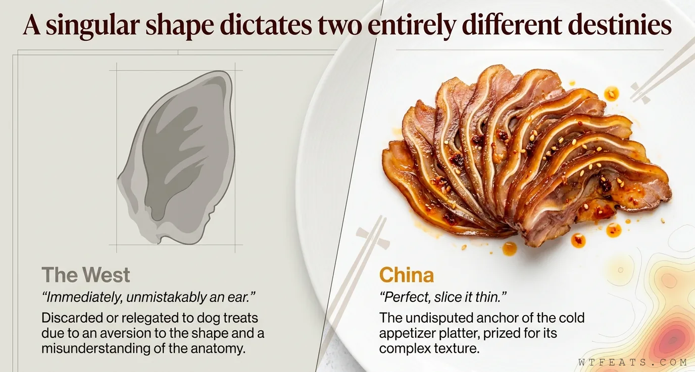

The Resume

One shape. Two destinies.
The West looked at a pig ear and said: no thank you, we'll pass — discarded or relegated to dog treats. Chinese food culture looked at the exact same shape and said: perfect, slice it thin, we need it for the cold platter. The difference is not squeamishness versus bravery. It is an understanding of what a pig ear actually contains.
Same ear. Completely different destiny.